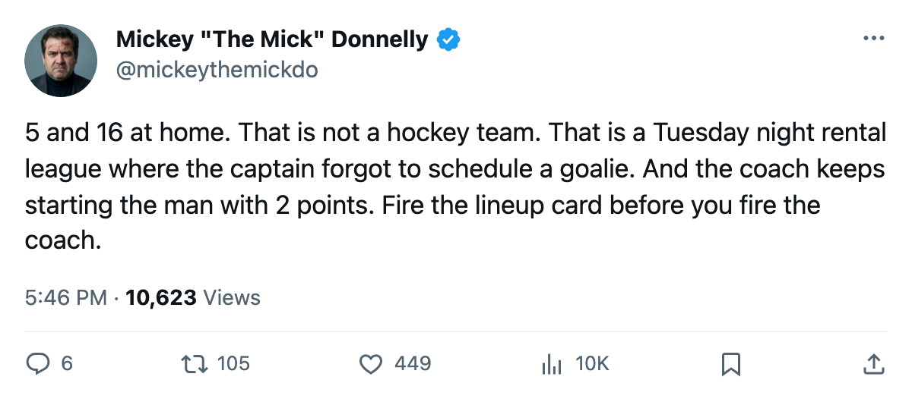
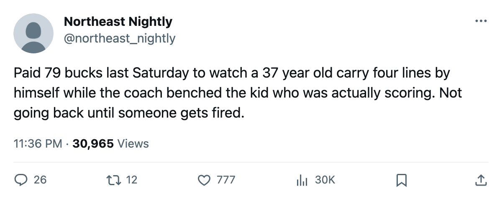

NSH
NSH5-16 AT HOME. 2 POINTS IN 42 GAMES. THE COACH OWNS BOTH.
Chicago has the second-worst home record in this league and the coach keeps starting a 31-year-old winger who has contributed 2 points all season.
 Mickey "The Mick" DonnellyColumnist, ex-goalie · The Penalty Box
Mickey "The Mick" DonnellyColumnist, ex-goalie · The Penalty BoxTony Granato's predecessor never got this chance but Chicago's bench is 5-16 at home and the lineup card hasn't changed
 Chicago Blackhawks are 5-16 at home. Five. Sixteen. The only building worse in this league belongs to San Jose, and those people have been embarrassed since October. Tonight Chicago gets Nashville at home, and if the pattern holds, another 15,057 people go home watching a loss on a night they spent $79 apiece to watch it.
Chicago Blackhawks are 5-16 at home. Five. Sixteen. The only building worse in this league belongs to San Jose, and those people have been embarrassed since October. Tonight Chicago gets Nashville at home, and if the pattern holds, another 15,057 people go home watching a loss on a night they spent $79 apiece to watch it.
The record is 9-20-9. Thirty-five points. $48.74M in payroll, $1.39M a point, and the tools are on the roster. That combination belongs at the coach's door.  Theoren Fleury82 is 37 years old and has 44 points in 36 games, a 100 pace. He is on 21.1 minutes a night. The man is doing the work of a first-liner while carrying a number that most of his teammates can't read off a scoreboard.
Theoren Fleury82 is 37 years old and has 44 points in 36 games, a 100 pace. He is on 21.1 minutes a night. The man is doing the work of a first-liner while carrying a number that most of his teammates can't read off a scoreboard.
The man with 2 points
 Jay Pandolfo66 is 31. He has played 42 games. He has 2 points. The Bureau's Development Index has him at -4, his 70 reading four below the Book's base. He logs minutes on the wing. The coach starts him there. Every night. Forty-two nights.
Jay Pandolfo66 is 31. He has played 42 games. He has 2 points. The Bureau's Development Index has him at -4, his 70 reading four below the Book's base. He logs minutes on the wing. The coach starts him there. Every night. Forty-two nights.
You can dress a fourth liner. You can dress a checker. You cannot dress a man with 2 points in 42 games and call it a lineup card, because the word "lineup" implies you put the men who produce in position to do it. Pandolfo has 2 points in 42 games. The 4th line in this league averages more production than that.
 Eric Daze83 has 49 points. He is 30 and carries an 87 on the Book. He is on 22.7 minutes a night doing what he can. Igor Radulov76 is up 11 on the Index, a 71 reading 80, and he has 17 points in 42 games. The young winger is climbing and the coach has the 31-year-old with 2 points on the same side of the lineup card.
Eric Daze83 has 49 points. He is 30 and carries an 87 on the Book. He is on 22.7 minutes a night doing what he can. Igor Radulov76 is up 11 on the Index, a 71 reading 80, and he has 17 points in 42 games. The young winger is climbing and the coach has the 31-year-old with 2 points on the same side of the lineup card.
The building knows
The attendance is 15,057. That is respectable for a club that has never won a Cup and hasn't sniffed one this season. Those people showed up and watched their team lose 16 times at home. The Bureau's Morale Scale sits at 92.7 for the club, which is middle-of-the-road. Nobody in that room is throwing helmets. Nobody is crying. They are just losing in front of 15,057 people who drove to the building.
TONIGHT: Nashville comes in at 18-11-5 with 55 points and  David Legwand92 carrying 55 points in 39 games. Competent team, and competent teams win in Chicago right now because Chicago can't win at home. Five and sixteen. The coach's name is on that record. Pandolfo's 2 points are on the lineup card because the coach put them there, 42 times.
David Legwand92 carrying 55 points in 39 games. Competent team, and competent teams win in Chicago right now because Chicago can't win at home. Five and sixteen. The coach's name is on that record. Pandolfo's 2 points are on the lineup card because the coach put them there, 42 times.
A coach starts a man with 2 points, looks at that number, and writes the name back on the card the next morning. That's what a lost team looks like.

